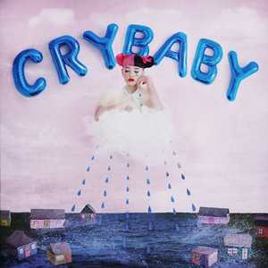

Cry baby
2015-2017
Credits:
- Melanie Martinez: Art Direction, Composer, Main artist
- Tim Sommers: Composer, Engineer, Producer
- Micheal Leary: Additional Production, Composer, Engineer, Producer
Cry Baby is the debut studio album by American singer and songwriter Melanie Martinez. It was released on August 14, 2015, through Atlantic. The album was supported by the release of three singles. Two singles preceded the album's release: lead single "Pity Party", was released on June 2, 2015] while the second single, "Soap", was released on July 10, 2015. The third and final single from the album, "Sippy Cup" was released July 31, 2015. Cry Baby is a visual concept album. Musically, Cry Baby is primarily an alternative pop, electropop, and indie pop record, and received generally positive reviews from critics.

Side One
- Cry Baby
- Dollhouse
- Sippy Cup
- Carousel
- Alphabet Boy
- Soap
- Training Wheels
Side Two
- Pity Party
- Tag, You're it
- Milk and Cookies
- Pacify Her
- Mrs. Potato Head
- Mad Hatter
- Play Date
- Teddy Bear
- Cake
- In 2013, Mojo magazine listed "Are You Experienced" as the greatest guitar album of all time.
- Melanie released a feature-film, K-12, which features Cry Baby as the main character again.
- Melanie Martinez
- Cry Baby's birthday is likely to be on August 14th.